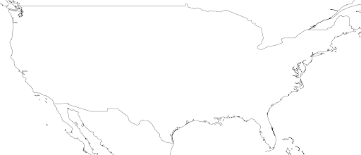

Distribution Statement
Extend GeoIPS with a new Static Sector#
Static Sectors are plugins which tell GeoIPS where the data will be plotted. Static Sectors, as their name implies, define a single area and are not generated during runtime. They information about their projection type (Stereographic, Equal Area Cylindrical, etc.), the resolution of the data in meters, the shape of the sector in pixels, and also include a metadata section which gives users more information about the sector they are using.
In this section, we will be creating a custom static sector that overlays the Continental United States (CONUS). To start off, run the following commands, which create a new folder for your static sectors.
mkdir -pv $MY_PKG_DIR/$MY_PKG_NAME/plugins/yaml/sectors/static
cd $MY_PKG_DIR/$MY_PKG_NAME/plugins/yaml/sectors/static
Once you’ve created the folder, you are able to create your custom CONUS static sector. Copy and paste the code block below into my_conus_sector.yaml. Feel free to remove the comments, as they just descibe what each property does.
Creating Your Static Sector#
interface: sectors
family: area_definition_static
name: my_conus_sector
docstring: "My CONUS Sector"
metadata:
region:
continent: NorthAmerica
country: UnitedStates
area: x
subarea: x
state: x
city: x
spec:
area_id: my_conus_sector
description: CONUS
projection:
a: 6371228.0 # The average radius of the Earth in Meters
lat_0: 37.0 # The center latitude point
lon_0: -96.0 # The center longitude point
proj: eqc # Describes the Projection Type (from PROJ Projections)
units: m
resolution:
- 3000 # The resolution of each pixel in meters (x, y)
- 3000
shape:
height: 1000 # The height of your sector in pixels
width: 2200 # The width of your sector in pixels
center: [0, 0] # The center x/y point of your sector. Almost always [0, 0]
If this is your first time creating a plugin, it’s good to know what the top level attributes actually do for a plugin.
Please see documentation for
additional info on GeoIPS required attributes,
interface, family, and docstring.
Note: while you can leave the metadata untouched, it is very helpful to
have additional information about the sector being displayed, not only for the backend
of GeoIPS, but also for people using this sector plugin. The metadata also tells the
GeoIPS filename formatters where to place the image, via geographic-labeled
subdirectories, based on the info you provide in the region object.
Metadata for a static sector can be specified in two formats, legacy or updated. The
only difference between these two formats is that in legacy, we have a top level
region object, whereas in the updated format the remove that object and shift it’s
contents one level up. We recommend you use the updated format as legacy will eventually
be removed.
Legacy
metadata:
region:
continent: NorthAmerica
country: UnitedStates
area: x
subarea: x
state: x
city: x
Updated
metadata:
continent: NorthAmerica
country: UnitedStates
area: x
subarea: x
state: x
city: x
Once you’ve made the appropriate changes, you will be ready to use your custom sector plugin with CLAVR-x data.
The commands you ran in the previously create a custom conus sector. my_conus_sector.yaml will be an example plugin, showing you that you can create sectors just like conus.yaml, to your own specifications. You can create a sector anywhere on the globe, in the fashion we just displayed above.
To quickly check whether or not you like the shape and resolution of your custom sector,
you can use the command line function geoips test sector. This will plot and save
images containing the borders and coastlines of the inputted sectors. For example, to
test your custom sector, run the following:
cd $MY_PKG_DIR/$MY_PKG_NAME/
geoips test sector my_conus_sector
Once completed, open the my_conus_sector.png image to see what your sector will look like.
{kind=link}
Using Your Custom Static Sector#
To use my_conus_sector.yaml in your test script, simply replace --sector_list conus
with --sector_list my_conus_sector. This change means that the script
clavrx.conus_annotated.my-cloud-top-height.sh will use the sector you just
created, rather than the GeoIPS conus sector we’ve been using previously. The commands
below display how to make that change. Note, the vim command was generalized for this
documentation, but feel free to use whatever text editor you prefer.
cd $MY_PKG_DIR/tests/scripts
cp clavrx.conus_annotated.my-cloud-top-height.sh clavrx.my_conus_sector.my-cloud-top-height.sh
vim clavrx.my_conus_sector.my-cloud-top-height.sh
Once you’ve made that change, you can run the command below to generate an image using your custom CONUS sector!
$MY_PKG_DIR/tests/scripts/clavrx.my_conus_sector.my-cloud-top-height.sh
{kind=link}